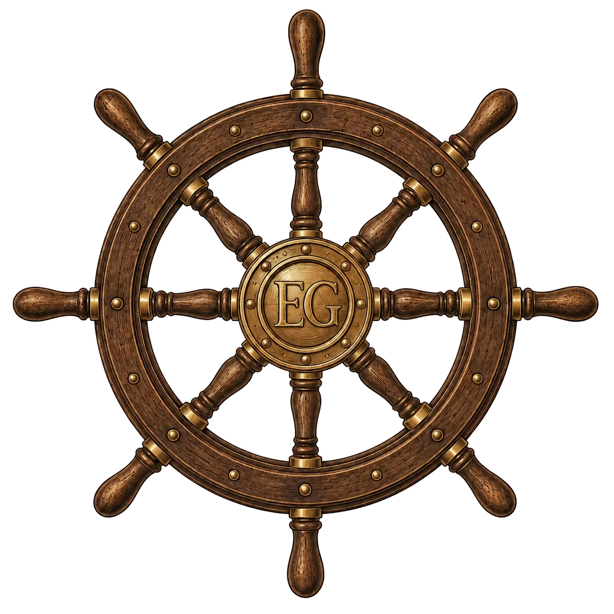
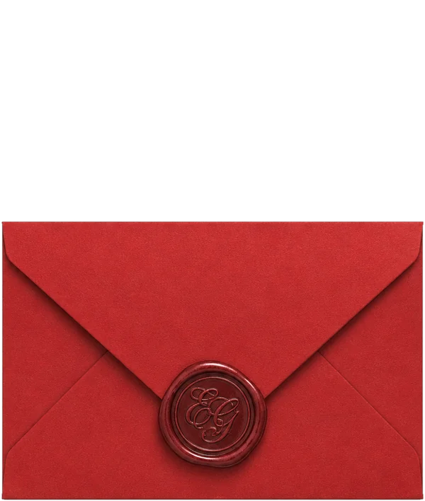
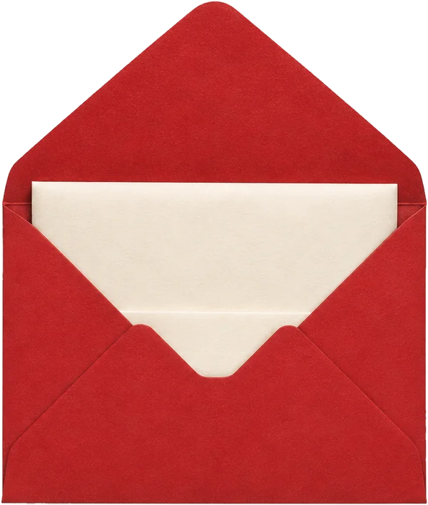

🌍 다른 도시
✦ 다른 인물
🏛 인물 장소
🏠 콩파뇽 집
📍 좌표 편집
📍
편집 모드
— 옮길 메종 핀을 누른 뒤, 그 집
지붕
을 클릭하세요
Constellatio
Ernest Hemingway
한 별의 다섯 착지 · 1899–1961
heure locale
✦
의 여정
별로 돌아가기 →
당신의 집으로 가는 길을 여는 중…
아무 곳이나 눌러 바로 들어가기
🧭

🍎
PERA
배낭
EG크레덴시알
내 교양의 흔적 담기
EG 타벨라이
교양의 벗들과 나눈 편지
떠나기
다른 도시
›
다른 인물
›
보기
인물 장소
콩파뇽 집
전체 화면
살롱지기
📍 좌표 편집
🔭 천문대 순회
›
대시보드 11
›
⎋ 로그아웃
×
×


×
❚❚
×
대문을 클릭해 들어가세요
×
⋮
✎ 대문 고르기
✎ 엘리베이터 고르기
✎ 실내 인테리어 고르기
내 대문 고르기
×
maison 0628e